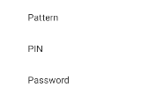
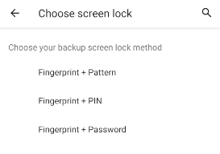
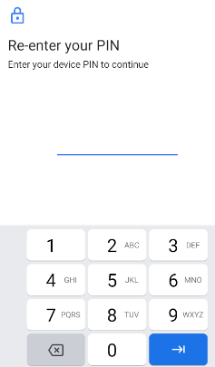
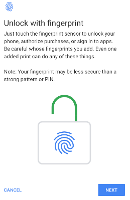
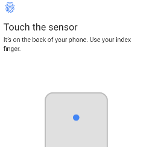

voltmx.localAuthentication Namespace
voltmx.localAuthentication Namespace
The voltmx.localAuthentication namespace provides the functions to authenticate, get the status of the authentication, and cancel authentication.
Note: Applicable for iOS: For information about how to enable the Face ID feature in your VoltMX Iris application, click here. For information about how to detect whether a device supports either the Touch ID or Face ID feature or the Iris authentication, refer the getBiometryType API.
Important: If you have used the Local authentication API in your VoltMX Iris projects, before moving your project to the V9.2 release, ensure that you read the Local Authentication Migration guidelines article.
This namespace contains the following API elements.
Functions
The voltmx.localAuthentication namespace provides the following functions.
voltmx.localAuthentication.authenticate
The API is used to authenticate the user with configurable system UI.
Note: Call the
voltmx.localAuthentication.authenticateAPI only if the[voltmx.localAuthentication.getStatusForAuthenticationMode](#getStatusForAuthenticationMode)API returns the success status code (5000).
Syntax
voltmx.localAuthentication.authenticate(
authenticationMode,
statusCallback,
configMap);
Input Parameters
| Parameter | Description |
|---|---|
| authenticationMode | Specifies the biometric authentication mode for which the status is requested. The data type is constant. For the authentication modes, see Authentication Modes. |
| statusCallBack (status, message) | A callback conveys the status of the authentication with appropriate status and message. The default value is nil. For status code, see the Status Codes section. |
| configMap | Specifies the configuration dictionary for the system authentication UI. The configMap parameter uses keys listed in the table below. promptMessage: Message to be displayed on the screen. This key is used to set title in the System UI, applicable for both the iOS and the Android platforms. This is a mandatory key. fallbackTitle: Allows you to edit the default text, "Enter Password" on the native pop-up, which is displayed when user authentication fails using Touch ID or Face ID. This is applicable only for the iOS platform. This is a mandatory key. policy: Use this key to set the local authentication policy. This is applicable only for the iOS platform. The value of this key is set to constants.LOCAL_AUTHENTICATION_POLICY_DEV_OWNER_AUTH_WITH_BIOMETRICS, by default. This is an optional key. Depending on the type of local authentication policy, the policy key can have the following values:constants.LOCAL_AUTHENTICATION_POLICY_DEV_OWNER_AUTH_WITH_BIOMETRICSconstants.LOCAL_AUTHENTICATION_POLICY_DEV_OWNER_AUTH subTitle: Use this key to set a subtitle in the System UI. This is an optional key applicable only for the Android platform. deviceCredentialAllowed: Use this key to enable device credentials in the System UI. This is an optional key applicable only for the Android platform. The default value is false. > Note: When you set the deviceCredentialAllowed key, the negativeButtonText property is ignored, and the cancelAuthentication() API does not cancel an authentication in progress. This property allows the user to authenticate even with the device credentials (PIN/PASSWORD, PATTERN) which the user registered in the device settings. confirmationRequired: After a user has been authenticated successfully, use this key to enable the Confirmation button. This key acts as a hint to the system to request for a confirmation from the user after a biometric authentication. For example, the Face and Iris authentication are passive implicit modalities that do not require a user action to be performed for execution. > Note: As this key acts as a hint to the system, the system may choose to ignore this flag. If the system chooses to ignore this flag, it will require confirmation, by default. For example, if you disable implicit authentication in the settings, or if it does not apply to a modality (e.g. Fingerprint), the System may choose to ignore this key. A typical use case for not requiring confirmation would be low-risk transactions, such as re-authenticating a recently authenticated application. Likewise, A typical use case for requiring confirmation would be for authorizing a purchase. This is an optional key applicable only for devices running on Android Q and later versions. negativeButtonText: Use this key to set the text for the negative button in the System UI. The default value for this key is Negative Button. This is an optional key applicable only for the Android platform. The negative button typically works as a Cancel button, but can be used as an alternate method to request authentication. For example, it can be used to request for a back up password. This key can be used to implement custom authentication. > Note: When you select the negative button, the callback of the authenticate() API returns the 5003 error code. > Note: When you set the deviceCredentialsAllowed key, the negativeButtonText property is ignored, |
Example
function statusCB(status, message) {
if (status == 5000) {
voltmx.ui.Alert({
message: "AUTHENTICATION SUCCESSFULL",
alertType: constants.ALERT_TYPE_INFO,
yesLabel: "Close"
}, {});
}
else {
var messg = status + message;
voltmx.ui.Alert({
message: messg,
alertType: constants.ALERT_TYPE_INFO,
yesLabel: "Close"
}, {});
}
}
function authUsingTouchID() {
var configMap = {
"promptMessage": "PLEASE AUTHENTICATE USING YOUR TOUCH ID",
"fallbackTitle": "Please enter your Password"
"description": "Description",
"policy": constants.LOCAL_AUTHENTICATION_POLICY_DEV_OWNER_AUTH_WITH_BIOMETRICS,
"subTitle": "sub title",
"deviceCredentialAllowed": true,
"confirmationRequired": true,
"negativeButtonText": "Negative"
};
voltmx.localAuthentication.authenticate(constants.LOCAL_AUTHENTICATION_MODE_BIOMETRICS, statusCB, configMap);
}
Note: The fallbackTitle and policy keys are only available for the iOS platform. The subTitle, deviceCredentialAllowed, confirmationRequired, and negativeButtonText keys are only available for the Android platform.
Return Values
No
Remarks
Note: For iOS devices, depending on the type of biometric authentication available, the promptMessage is either PLEASE AUTHENTICATE USING YOUR TOUCH ID or PLEASE AUTHENTICATE USING YOUR FACE ID. You can know the type of biometric authentication available using the getBiometyType API.
Note: If you assign an empty string, “ ” to the fallbackTitle key, the Enter Password button will be hidden. If the fallbackTitle key is not defined in the configMap parameter, the default (Enter Password) value is displayed.
Platform Availability
- iOS
- Android
voltmx.localAuthentication.checkFeatureAvailability
The checkFeatureAvailability API provides information about the availability of local authentication-related system features in the device.
This API only indicates whether the device supports the specified feature. It does not indicate whether the feature is enabled or if the corresponding authentication data is registered with the device.
Syntax
voltmx.localAuthentication.checkFeatureAvailability();
Input Parameters
One or more values of face, fingerprint, iris as a list.
Example
var result = voltmx.localAuthentication.checkFeatureAvailability(["face", "fingerprint", "iris"]); if (result.fingerprint == voltmx.localAuthentication.FEATURE_AVAILABLE) { alert("Fingerprint system feature is present in the device"); }
Return Values
A key-value pair in a JS object. The key is any of the face, fingerprint, or iris values. The value is any of the following constants:
Return Value Description voltmx.localAuthentication.FEATURE_AVAILABLE The API returns this constant when the device supports the specified system feature. voltmx.localAuthentication.FEATURE_NOT_AVAILABLE The API returns this constant when the device does not support the specified system feature. voltmx.localAuthentication.FEATURE_UNKNOWN The API returns this constant if the specified feature is unsupported on the device, The API can detect support for the face and iris features in devices that run on Android 10 (API level 29), and later versions. Support to detect the fingerprint feature is present in Android 6 (and later) devices.
Remarks
This API behaves in accordance to the native Android packageManager.hasSystemFeature() API.
Platform Availability
- Android
voltmx.localAuthentication.getBiometryType
This API differentiates whether a device supports either the Touch ID or Face ID feature. The voltmx.localAuthentication.getBiometryType API is available from iOS 11.
Syntax
voltmx.localAuthentication.getBiometryType();
Example
function getBiometryTypeOfDevice() {
var promptMessage = "Sign in with ";
switch (voltmx.localAuthentication.getBiometryType()) {
case constants.BIOMETRY_TYPE_NONE:
// Handle the case if the device doesn't support any biometryType
break;
case constants.BIOMETRY_TYPE_TOUCHID:
promptMessage += "TouchID";
break;
case constants.BIOMETRY_TYPE_FACEID:
promptMessage += "FaceID";
break;
case constants.BIOMETRY_TYPE_UNDEFINED:
// Handle the case if the device is not a iOS11 device or later
break;
}
}
Return Values
| Return Value | Description |
|---|---|
| constants.BIOMETRY_TYPE_NONE | If there is no biometric authentication in the device. |
| constants.BIOMETRY_TYPE_TOUCHID | If the device supports Touch ID authentication. |
| constants.BIOMETRY_TYPE_FACEID | If the device supports Face ID authentication. |
| constants.BIOMETRY_TYPE_UNDEFINED | If this API is called on the device with OS earlier than iOS11. |
Remarks
Face ID is the new biometric authentication that Apple has introduced with iPhoneX. This API will help to customize the prompt message in voltmx.localAuthentication.authenticate. Depending on the type of authentication available, the prompt message is Sign in with FaceID or Sign in with TouchID.
Platform Availability
- iOS
voltmx.localAuthentication.cancelAuthentication
The API cancels the current authentication process.
Note: This API won't work if the deviceCredentialAllowed key in the authenticate() is set to true.
Syntax
voltmx.localAuthentication.cancelAuthentication();
Example
var cancelButton = voltmx.ui.Button({
onClick: btnOnClick
});
function btnOnClick() {
voltmx.localAuthentication.cancelAuthentication()
}
Return Values
| Return Value | Description |
|---|---|
| status | The 5004 status code is returned indicating the authentication is canceled. |
Remarks
The API is available only for the Android platform.
Platform Availability
- Android
voltmx.localAuthentication.getStatusForAuthenticationMode
The API returns the usability status of the authentication.
Note: For information about how to detect whether a device supports either the Touch ID or Face ID biometrics, refer the getBiometryType API.
Syntax
voltmx.localAuthentication.getStatusForAuthenticationMode(
authenticationMode);
Input Parameters
| Parameter | Description |
|---|---|
| authenticationMode | Specifies the authentication mode for which the status is requested. The data type is constant. For the authentication modes, see Authentication Modes. |
Example
function isAuthUsingTouchSupported() {
var status = voltmx.localAuthentication.getStatusForAuthenticationMode(constants.LOCAL_AUTHENTICATION_MODE_TOUCH_ID);
if (status == 5000) {
voltmx.ui.Alert({
message: "AUTHENTICATION BY TOUCHID SUPPORTED",
alertType: constants.ALERT_TYPE_INFO,
yesLabel: "Close"
}, {});
}
else {
var msg = "TOUCHID AUTHENTICATION RETURNED THE STATUS ::" + status;
voltmx.ui.Alert({
message: status,
alertType: constants.ALERT_TYPE_INFO,
yesLabel: "Close"
}, {});
}
}
Return Values
| Return Value | Description |
|---|---|
| status | A status code is returned indicating the usability status of authentication. For status codes, see the Status Codes section. |
Remarks
Using the API, you can verify whether local authentication is supported on the device.
Even when the getStatusForAuthenticationMode(constants.LOCAL_AUTHENTICATION_MODE_BIOMETRICS) API returns a 5005 status code (biometrics not set on the device), you can display a System Authentication prompt with either PIN, PATTERN, or PASSWORD by following these steps:
- Check if device credentials are configured for the device by invoking the
getStatusForAuthenticationMode(constants.LOCAL_AUTHENTICATION_MODE_DEVICE_CREDENTIALS)API.- If the credentials are configured, invoke the
[authenticate](#authenticate)API with thedeviceCredentialAllowedparameter set to True.
Platform Availability
- iOS
- Android
voltmx.localAuthentication.requestBiometricsEnroll
When biometrics are not enrolled on the device, and you invoke the authenticate() API, the 5007 (Authentication does not start because biometrics are not enrolled on the device) error code is returned. In such cases, developers can use the requestBiometricsEnroll API to direct app users to the device settings page, where they can enroll for biometrics and setup device credentials such as PIN/Pattern/Password, if necessary.
Syntax
voltmx.localAuthentication.requestBiometricsEnroll(statusCallback,configMap);
Input Parameters
| Parameter | Description |
|---|---|
| statusCallBack (status, message, info) [function] |
A callback function that conveys the status of the authentication with an appropriate status code. The API returns one of the following status codes:
|
| configMap [dictionary] |
Specifies the configuration dictionary for the API. The configMap parameter uses the following keys:
NOTE:
|
Example
resultCallback: function(info) {
alert("status code : "+ info.status);
},
enrommBiometric : function(){
var configMap = {
"authenticators": [voltmx.localAuthentication.BIOMETRIC_WEAK, voltmx.localAuthentication DEVICE_CREDENTIAL],
"callback" : this.resultCallback
};
voltmx.localAuthentication.enrollBiometrics(configMap);
}
Return Values
None
API Behavior
Based on the authenticator specified in the configMap parameter, and the configuration status of device credentials, the behavior of the API varies as follows:
| Input Authenticator (voltmx.localAuthentication.xxx) | Output Behavior when Device Credentials are not set | Output Behavior when Device Credentials are already set |
|---|---|---|
| [DEVICE_CREDENTIAL] | The user is directed to the settings screen to register for device credentials such as PIN, Pattern, or Password.  | The API returns the 5018 status code. |
| [BIOMETRIC_WEAK] | In devices that use Android API levels less than or equal to 27 (<= 27), the API returns the 5019 status code. In devices that use Android API levels greater than or equal to 28 (>=28), the following system prompt appears.  If the device does not support the BIOMETRIC_WEAK authenticator, the API returns the 5019 status code. | In devices that use Android API levels less than or equal to 27 (<= 27), the API returns the 5019 status code. In devices that use Android API levels greater than or equal to 28 (>=28), the user must first authenticate with the current credential (such as PIN, pattern, or password) used on the device. After confirmation, the user is directed to register for biometrics on the device.    If the device does not support the BIOMETRIC_WEAK authenticator, the API returns the 5019 status code. |
| [BIOMETRIC_STRONG] | In devices that use Android API levels less than or equal to 29 (<= 29), the API returns the 5019 status code. In devices that use Android API levels greater than or equal to 30 (>=30), the following system prompt appears. If the device does not support the BIOMETRIC_STRONG authenticator, the API returns the 5019 status code. | In devices that use Android API levels less than or equal to 29 (<= 29), the API returns the 5019 status code. In devices that use Android API levels greater than or equal to 30 (>=30), the user must first authenticate with the current credential (such as PIN, pattern, or password) used on the device. After confirmation, the user is directed to register for biometrics on the device. If the device does not support the BIOMETRIC_STRONG authenticator, the API returns the 5019 status code. |
[BIOMETRIC_WEAK, BIOMETRIC_STRONG, DEVICE_CREDENTIAL] NOTE: BIOMETRIC_WEAK is a superset of BIOMETRIC_STRONG and is defined such that BIOMETRIC_STRONG | BIOMETRIC_WEAK == BIOMETRIC_WEAK | In devices that use Android API levels less than or equal to 27 (<= 27), the API only considers the DEVICE_CREDENTIAL authenticator. In devices that use Android API levels greater than or equal to 28 (>=30), the following system prompt appears. If the device does not support the BIOMETRIC_WEAK or BIOMETRIC_STRONG authenticators, the user is directed to the settings screen to register for device credentials such as PIN, Pattern, or Password. | The API displays the following message: One of the specified authenticator (DEVICE_CREDENTIAL) is already enrolled. If the device does not support the BIOMETRIC_WEAK or BIOMETRIC_STRONG authenticators, the API returns the 5018 status code. |
[BIOMETRIC_WEAK, BIOMETRIC_STRONG] NOTE: BIOMETRIC_WEAK is a superset of BIOMETRIC_STRONG and is defined such that BIOMETRIC_STRONG | BIOMETRIC_WEAK == BIOMETRIC_WEAK | In devices that use Android API levels less than or equal to 27 (<= 27), the API returns the 5019 status code. In devices that use Android API levels greater than or equal to 28 (>=28), the following system prompt appears. If the device does not support the BIOMETRIC_WEAK or BIOMETRIC_STRONG authenticators, the user is directed to the settings screen to register for device credentials such as PIN, Pattern, or Password. | In devices that use Android API levels less than or equal to 27 (<= 27), the API returns the 5019 status code. In devices that use Android API levels greater than or equal to 28 (>=28), the user must first authenticate with the current credential (such as PIN, pattern, or password) used on the device. After confirmation, the user is directed to register for biometrics on the device. |
| [BIOMETRIC_WEAK, DEVICE_CREDENTIAL] | In devices that use Android API levels less than or equal to 27 (<= 27), the API only considers the DEVICE_CREDENTIAL authenticator. In devices that use Android API levels greater than or equal to 28 (>=28), the following system prompt appears. If the device does not support the BIOMETRIC_WEAK authenticator, the user is directed to the settings screen to register for device credentials such as PIN, Pattern, or Password. | The API displays the following message: One of the specified authenticator (DEVICE_CREDENTIAL) is already enrolled. If the device does not support the BIOMETRIC_WEAK or BIOMETRIC_STRONG authenticators, the API returns the 5018 status code. |
| [BIOMETRIC_STRONG, DEVICE_CREDENTIAL] | In devices that use Android API levels less than or equal to 29 (<= 29), the API only considers the DEVICE_CREDENTIAL authenticator. In devices that use Android API levels greater than or equal to 30 (>=30), the following system prompt appears. If the device does not support the BIOMETRIC_STRONG authenticator, the user is directed to the settings screen to register for device credentials such as PIN, Pattern, or Password. | The API displays the following message: One of the specified authenticator (DEVICE_CREDENTIAL) is already enrolled. If the device does not support the BIOMETRIC_WEAK or BIOMETRIC_STRONG authenticators, the API returns the 5018 status code. |
NOTE: The screens are only for the purpose of illustration, and may differ from device to device. The screenshots displayed in the table have been captured on an Android emulator that uses Android API level 30.
Platform Availability
- Android
Authentication Modes
Following are the supported constants for authentication mode.
-
constants.LOCAL_AUTHENTICATION_MODE_TOUCH_ID
The same constant can be used for any biometric authentication mode, i.e. Fingerprint(TouchID), FaceID, and Iris.Note: In case of Android, you can use the constant constants.LOCAL_AUTHENTICATION_MODE_BIOMETRICS in place of the constant constants.LOCAL_AUTHENTICATION_MODE_TOUCH_ID. The Biometric constant would support any biometric authentication mode.
-
constants.LOCAL_AUTHENTICATION_MODE_DEVICE_CREDENTIALS
This constant determines whether the device has either PIN, PATTERN, or PASSWORD configured as the authentication mode.Note: This constant is only available for the
getStatusForAuthenticationModeAPI on the Android platform.When the
getStatusForAuthenticationMode(constants.LOCAL_AUTHENTICATION_MODE_DEVICE_CREDENTIALS)API is invoked on a device, it returns one of the following status codes:- 5000: Indicates that a passcode (either PIN, PATTERN, or PASSWORD) is set on the device.
- 5005: Indicates that the passcode is not set on the device.
Authenticators
Authenticators specify an acceptable list of authenticator types that the device supports. Authenticators are of the following three types:
-
voltmx.localAuthentication.BIOMETRIC_STRONG: Authentication by using biometric credentials (such as fingerprint, iris, or face) that satisfy (meets or exceeds) the requirements for the Strong strength level (Class 3) as defined by the Android Compatibility Definition. This is only supported on Android 11 (API level 30, and later) devices.
-
voltmx.localAuthentication.BIOMETRIC_WEAK: Authentication by using biometric credentials (such as fingerprint, iris, or face) that satisfy (meets or exceeds) the requirements for the Weak strength level (Class 2) as defined by the Android Compatibility Definition. This is only supported on Android (API level 28, and later) devices.
NOTE: BIOMETRIC_WEAK is a superset that can imply either BIOMETRIC_WEAK or BIOMETRIC_STRONG. For more information about Biometric classes , refer to Biometric sensors.
-
voltmx.localAuthentication.DEVICE_CREDENTIAL: Authentication by using non-biometric or device credentials, such as PIN, pattern, or password.
For example, if you specify a combination of the BIOMETRIC_WEAK and DEVICE_CREDENTIAL authenticators, devices that support the BIOMETRIC_WEAK authenticator display a system prompt with the biometric and device credential (PIN/PATTERN/PASSWORD) options. In devices that do not support the BIOMETRIC_WEAK authenticator, the system displays only the device credential (PIN/PATTERN/PASSWORD) options, provided that a device credential (PIN/PATTERN/PASSWORD) is configured on the device.
NOTE: In devices that use Android versions prior to Android 11 (API level 30), a few combinations of authenticators are not supported. For example, using only DEVICE_CREDENTIAL is not supported prior to API level 30, and using BIOMETRIC_STRONG with DEVICE_CREDENTIAL is not supported in API level 28 to 29. If you invoke the API with unsupported authenticators, the API returns an appropriate error code.
Status Codes
The following table provides a list of status codes and their descriptions.
| Status Codes | Description |
|---|---|
| 5000 | No Error |
| 5001 | Authentication is not successful because a user fails to provide valid credentials. |
| 5002 | Authentication is canceled by a user. The following are the examples for different OS. In case of IOS, when a user taps Cancel in the dialog box. In case of Android, when a user presses the device back button while the system UI is displayed. |
| 5003 | Authentication is canceled. iOS: Authentication is canceled because the user tapped the fallback button (Enter Password). Android: Authentication is canceled because the user tapped the negative button. |
| 5004 | Authentication is canceled by system. |
| 5005 | Authentication does not start because the passcode is not set on the device. |
| 5006 | Authentication does not start because biometrics are not available on the device. |
| 5007 | Authentication does not start because biometrics are not enrolled on the device. |
| 5008 | Authentication does not start because the target device's OS does not support local authentication with biometrics. |
| 5009 | Authentication was not successful because there were too many failed user attempts for authentication, and the feature has now been locked. In case of Android, this occurs after 5 failed attempts, and lasts for 30 seconds. |
| 5010 | Error state returned when the current request has been running too long. Applicable only for Android platform. |
| 5011 | The operation was cancelled because 5009 occurred too many times. Authentication is disabled until the user unlocks with strong authentication (PIN/Pattern/Password). Applicable only for Android platform. |
Note:
Applicable for the Android OS and Devices
Android supports fingerprint, Face ID, and Iris modes of biometric authentication. Availability of the authentication is subject to the support provided by the device. Fingerprint is supported from Android 6 onwards. Face ID and Iris modes are supported from Android 10 onwards.
To support different modes of authentication, a developer need not make any changes to the API configuration. If the device supports multiple biometrics, the developer can specify a default or preferred method in device settings and the API invocation would launch the user preferred authentication flow.
There is no way to know the biometric modes supported by the device. Only the device user knows the biometric authentication supported by the device.